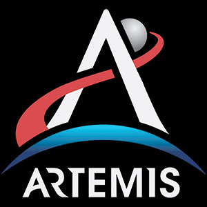
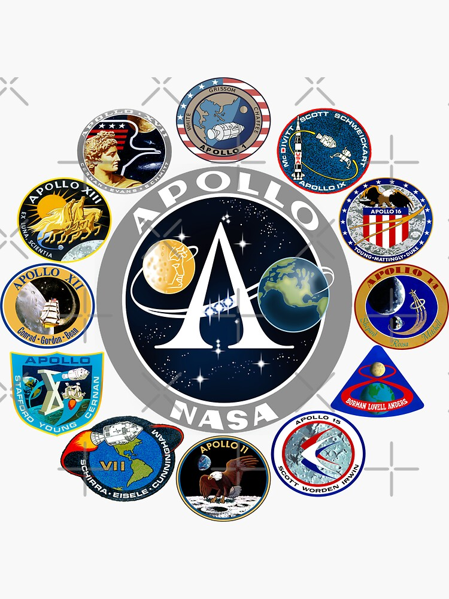
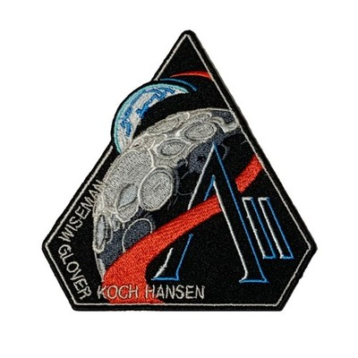
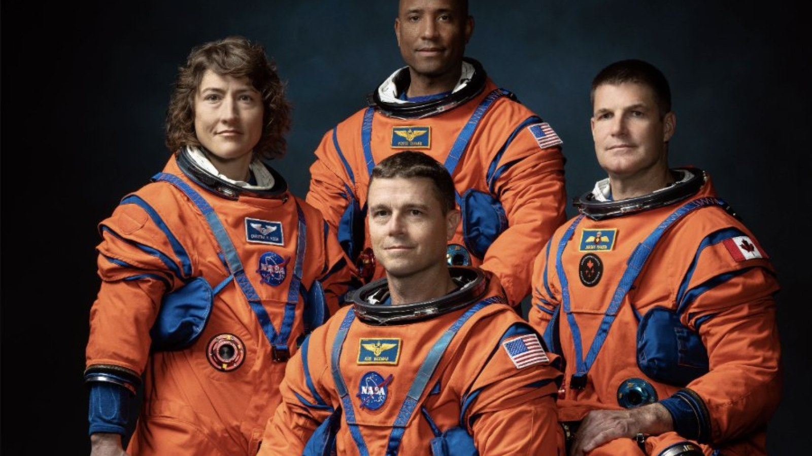

Artemis II: Journey to the Moon
Discover the incredible stories of Teamwork, Hard Work, and Perseverance from the crew returning humanity to the Moon.


Standing on the Shoulders of Giants
The Artemis generation carries forward the immense legacy of the Apollo missions. But the path to the stars is paved with profound challenges.
The Legacy of AS-204
In 1967, the Apollo 1 (AS-204) tragedy claimed the lives of astronauts Gus Grissom, Ed White, and Roger Chaffee. Through this heartbreaking failure, NASA learned its hardest lessons. It forged a culture of relentless perseverance, extreme ownership, and safety that ultimately put humans on the moon. Today, the Artemis crew honors their sacrifice by carrying that same torch of resilience forward.

The Crucible of Re-entry
While Artemis II builds upon previous testing, it carries unprecedented risks. Exploring deep space requires overcoming incredible fears and engineering hurdles.
The Heat Shield Adjustments
Following the uncrewed Artemis I mission, engineers discovered unexpected charring and loss of material on the Orion spacecraft's heat shield. The team had to meticulously analyze the failure, adapt the vehicle's trajectory, and ensure the adjustments will hold up to a blazing Mach 32 re-entry.
The Fear of Landing
Returning from the moon means hitting the Earth's atmosphere at nearly 25,000 mph, generating temperatures of 5,000°F (2,760°C). The crew faces the immense psychological weight of trusting the automated parachute deployment systems. Overcoming the fear of that violent, fiery descent and pinpoint ocean splashdown is a massive mental hurdle they train for daily.
Meet Your Crew



🥁 Band Builds More Than Musicians! 🎹
Before they were navigating the cosmos, they were keeping the tempo. Commander Reid Wiseman is a dedicated percussionist, and Mission Specialist Christina Koch plays the piano.
Turns out, the ultimate training for a space mission happens in the music room. Whether you are launching a rocket into orbit or playing a symphony, it all comes down to the same core principles: perfect timing, relentless practice, and incredible teamwork!
Mission Prep Challenge
Do you have the mindset of an Artemis astronaut? Test your knowledge on how to handle fear, doubt, and massive challenges.